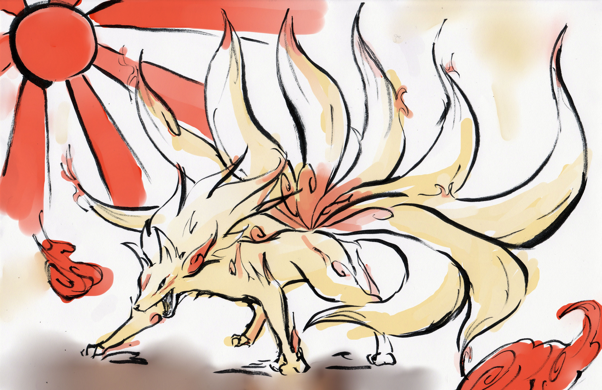
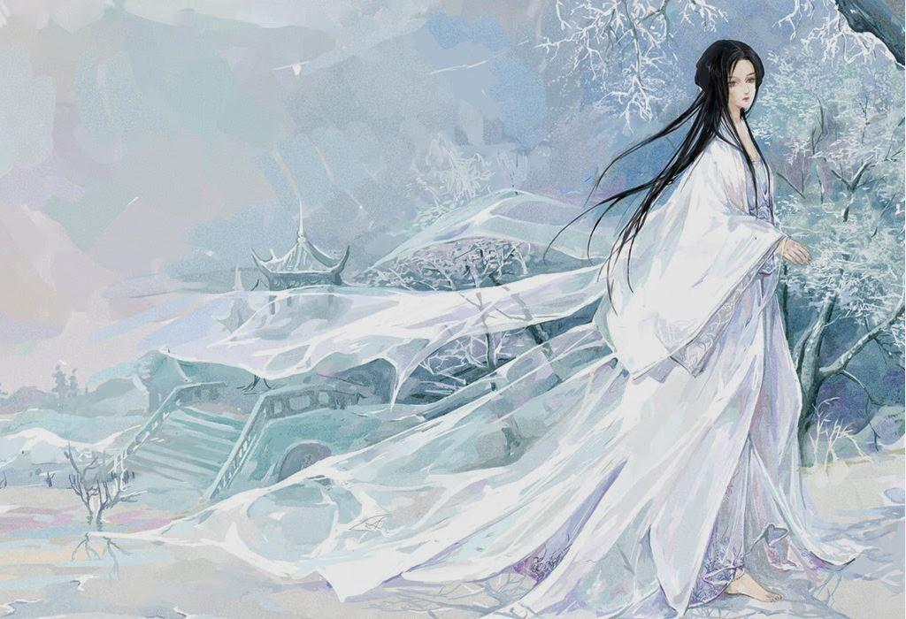
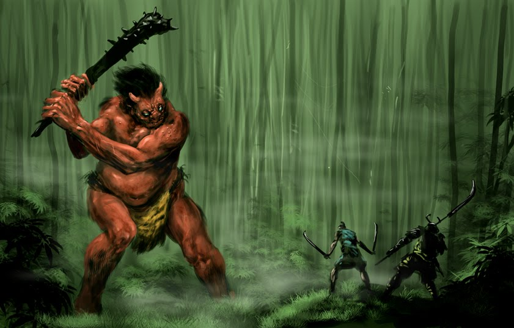
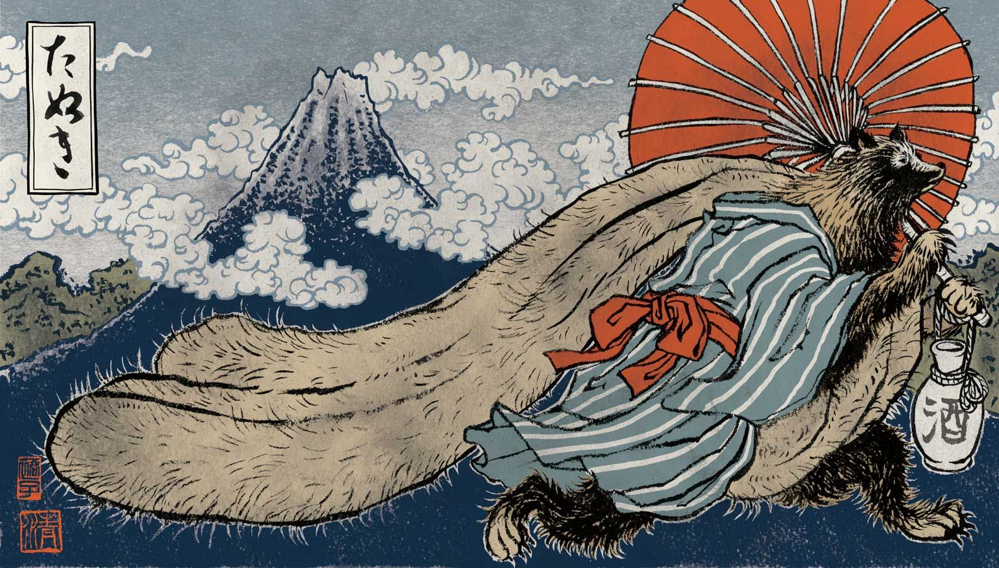
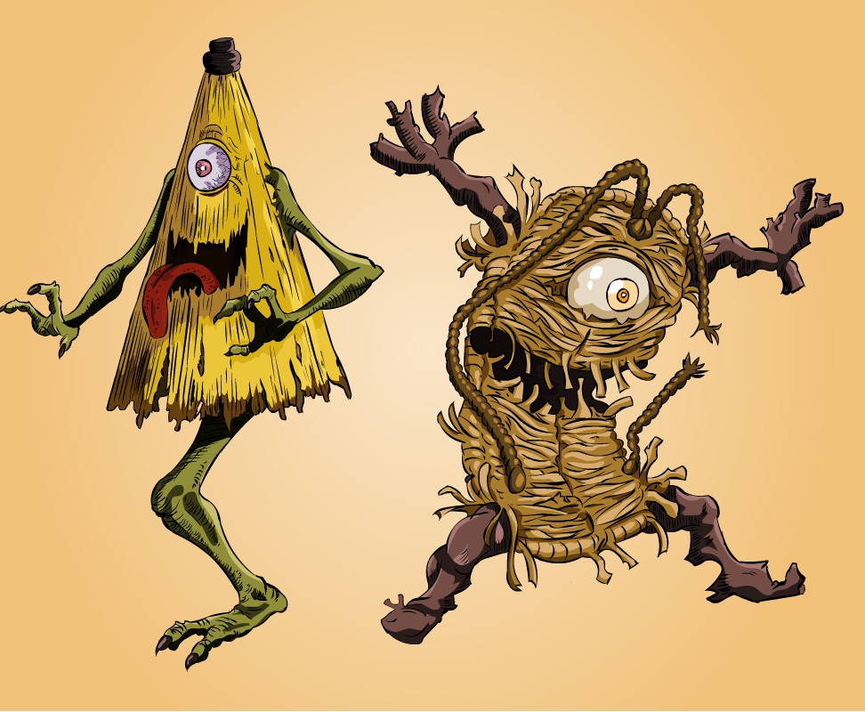

Kitsune – święte i przewrotne lisy
Lisie demony, znane w Japonii pod nazwą kitsune są najprawdopodobniej najbardziej rozpoznawalnym i najpopularniejszym rodzajem yōkai. Przesłanki o ich istnieniu pojawiają się w literaturze, źródłach historycznych i lokalnych podaniach ludowych. Ich częsta obecność w japońskiej kulturze i tradycji sprawiła, że na podstawie wyobrażenia samego kitsune można stworzyć spójną definicję istoty demonicznej. Lisi yōkai reprezentuje w sobie dwa przeciwstawne aspekty świata. Może zarówno demonstrować siły dobra jako święty opiekun, oddany chowaniec, wierny partner, ale równocześnie stać się podatny na zło. Wówczas jego natura jest bezwzględna i nieokrzesana. Kitsune wtedy może się stać niebezpiecznym zmiennokształtnym lub opętującym dusze niewinnych ludzi wrogim demonem. Kitsune jest w zasadzie manifestacją praw natury. Tak samo jak ona lis jest nieprzewidywalny w swych działaniach. W końcu przyrodę otacza się podziwem i czcią, ale odczuwa się wobec niej również dystans i strach. W ten sam sposób należy traktować lisiego yōkai, przede wszystkim dla własnego bezpieczeństwa.
Istnieje jedna legenda, która tłumaczyłaby genezę współzależności lisów i bóstwa. Dotyczy ona chramu Fushimy. Dwójka starych białych lisów wraz z piątką swoich dzieci przybyła do tego miejsca, gdyż ich marzeniem było przyczynienie się do szerzenia dobra i pokoju na świecie. Drogą przeznaczenia dotarli do Fushimy, gdzie rozpoczęli służbę u bóstwa Inari. W ten sposób lisy stały się wiernymi i dobrymi boskimi wysłannikami.
Yukionna – Śnieżna Pani
W folklorze japońskim przetrwało pewne wyobrażenie, które powraca wśród ludu każdej śnieżnej zimy. Mrozy i zawieruchy są zwiastunem przybycia niezwykle pięknej, ale i równie niebezpiecznej istoty jaką jest Yukionna. Śnieżna Pani jest przedstawiana jako młoda kobieta o niezwykłej urodzie. Posiada ona długie czarne włosy, alabastrową cerę, a jej usta mają kolor krwistej czerwieni. Odziana jest w białe kimono, które maskuje jej obecność wśród śnieżnej zamieci. Nie stąpa ona po powierzchni, lecz lewituje, dlatego nie zostawia po sobie żadnych śladów. Posiada również umiejętność zmiany kształtu i w każdej chwili może przybrać postać śnieżnego wiru lub białej mgły.
Do XVIII wieku kojarzona była jako jeden ze zwiastunów śmierci – każdy, kto zobaczył Yukionnę mógł być pewien, że jego kres jest już bliski. Wystarczył jej jeden podmuch lub lodowaty pocałunek, aby nieszczęsny śmiertelnik poddał się objęciom mroźnej śmierci. Mściwą naturę Śnieżnej Pani tłumaczono sposobem w jaki umarła. Uważano, że jest ona duszą zmarłej dziewczyny, która zamarzła podczas śnieżnej zawiei. Nie potrafiąc się pogodzić ze swym losem Yukionna zwodzi wędrowców z utartych szlaków i skazuje ich na ten sam los.
Oni – naiwne diabły
Wśród yōkai znajduje również swoje miejsce diabeł. Tradycyjne jego wyobrażenie opiera się na demonicznych oni. W kulturze ludowej przedstawiano go jako stwora z szeroką paszczą, rogami na głowie oraz tygrysimi zębiskami, o trzech pazurzastych palcach u rąk i nóg. Jego skóra przybierała barwę czerwoną lub niebieską. Oni przywdziewał jedynie przepaskę na biodra, a w dłoni dzierżył broń, którą zazwyczaj były widły lub maczuga z kolcami.
Demon ten był ściśle związany z jigoku, czyli japońskim wyobrażeniem piekła. W jego kompetencjach było prowadzenie grzeszników do tych ponurych, podziemnych zaświatów oraz poddawanie ich niewyobrażalnym i bardzo bolesnym torturom. Ciężko więc znaleźć w nim jakikolwiek pozytywny aspekt, gdyż oni kojarzy się wyłącznie z bólem i strachem. Mimo wszystko w folklorze przetrwał pozytywny obraz oni, który na ziemi nie zawsze działa na szkodę człowiekowi. Wręcz przeciwnie, jego kompetencje w świecie ziemskim są marginalizowane i poddawane trywializacji. W wydaniu ludowym jest on naiwną, przekupną i bezradną wobec chytrości ludzi istotą. Codzienna, ziemska rzeczywistość jest dla niego sferą obcą, gdzie czuje zagubienie oraz niepewność. Daje się z łatwością ośmieszać i oszukiwać nawet przez zwykłych wieśniaków. Jego pewność siebie wzrasta jedynie pod wpływem alkoholu i wtedy dopiero staje się skory do zabawy.
Tanuki – szczęśliwe jenoty
Wśród przedstawionych tutaj yōkai tanuki wzbudzają największą sympatię. Są to zwierzęce demony, które przybrały formę jenota – ssaka, który wyglądem i zachowaniem przypomina skrzyżowanie szopa z oposem. Nie można wszakże oprzeć się uroczemu zwierzątku o miękkim futerku. Opowieści i legendy o tanuki są znane w całej Japonii. Tanuki zazwyczaj przedstawiany jest w nich jako niegroźny dowcipniś, który posiada nadnaturalne zdolności. Czasami, jak to bywa w przypadku dwoistej natury yōkai, tanuki także mogą działać na niekorzyść, a nawet krzywdzić ludzi. Są to jednak rzadkie przypadki.
Natura tanuki spycha je na pogranicze. Lawirują one między oswojonym światem człowieka a nieprzewidywalnym światem przyrody. Ich umiejętności przystosowawcze są w tym przypadku kluczowe. Posiadają one zdolność do zmiany kształtów, z których korzystają przede wszystkim w psotach, ale i w celach ochronnych. Wykorzystują do tego swoją nienaturalnie wielką mosznę, którą potrafią zamienić w dowolny przedmiot. Wyolbrzymione narządy rozrodcze tanuki zwano kintama, czyli złotymi kulami. Sprawiały one, że ten pocieszny yōkai stał się symbolem płodności, a jego wizerunek traktowano jako talizman przynoszący szczęście i bogactwo. Ich ceramiczne podobizny można spotkać przed restauracjami, barami i sklepikami z sake. Miały przynosić pomyślność w interesach, a także roztaczać aurę gościnności. Nie było to trudne, zwłaszcza, że w wyobrażeniach ludowych tanuki przedstawiane są jako istoty skore do żartów i z zamiłowaniem do sake. Ich aparycja jest raczej krępa. Posiadają one duży brzuszek, służący również jako bęben, a ich oczy są zawsze szeroko otwarte.
Tsukomogami – żyjące przedmioty
Najdziwniejszym rodzajem yōkai są chyba ożywione przedmioty gospodarstwa domowego ([kibutsu]). Zwyczajne rzeczy, które znajdują się w wyposażeniu każdego japońskiego domostwa, po pewnym czasie mogą przybrać demoniczną formę. Umownym czasem przemiany jest osiągnięcie przez dany przedmiot granicy wieku stu lat. Wtedy zyskuje on swego ducha ([seirei]) i może rozpocząć demoniczną przygodę, zwodząc ludzkie serca. Wspólną nazwą tego typu demonów jest tsukomogami.
Od okresu Muromachi (1392-1573) istnieje przekonanie, że natura duchowa przedmiotów zależy od sposobu w jaki były traktowane przed przemianą. Rzeczy, których nie darzono dostatecznym szacunkiem lub pozbywano się ich w niewłaściwy sposób, wracają jako gniewne yōkai i szukają zemsty na ludziach, którzy źle się z nimi obchodzili.